HPV Cancers Alliance | Jeannie Joshi | March 2026
Five directions for your consideration. Desktop and mobile views provided for each.
Bold, cinematic feel. The featured film anchors the top of the page alongside the campaign title. Six interviews are presented in a clean layout below. The most streamlined option.
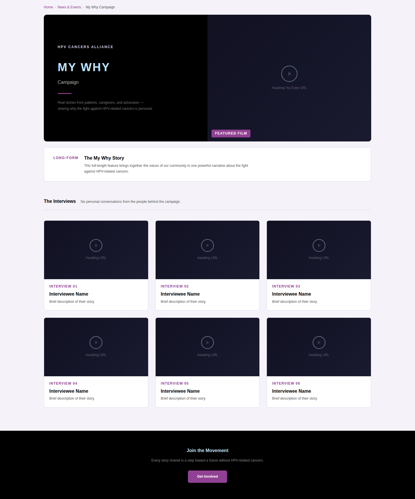
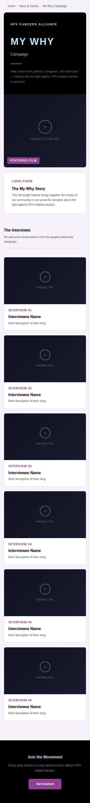
All seven videos are visible immediately on arrival. Scrolling reveals dedicated editorial sections for each story — cinematic imagery paired with personal quotes and attribution.
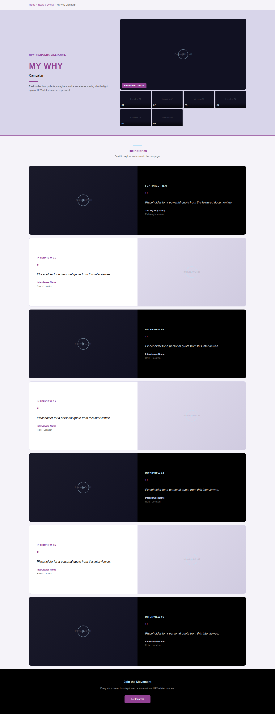
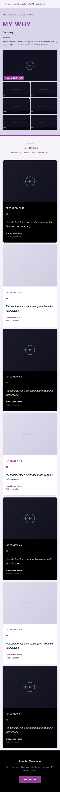
Identical layout to Option 3 with a white background. A brighter, lighter tone overall.
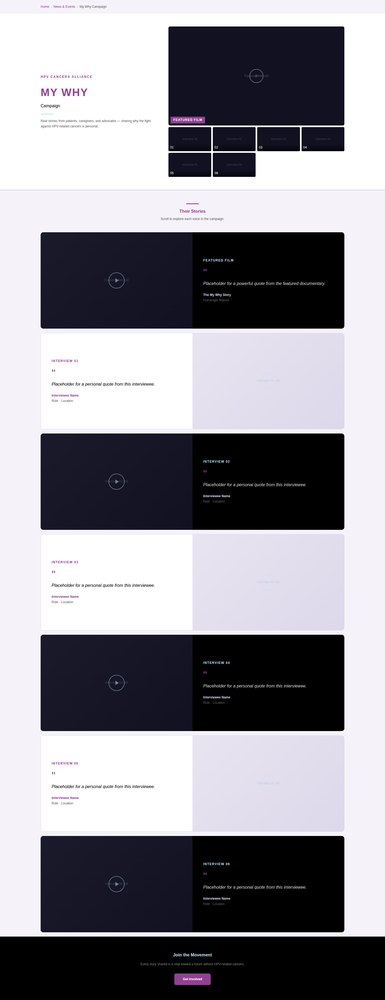
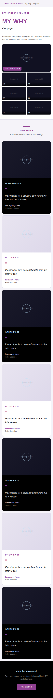
A mosaic of all seven stories presented on a dark canvas — varied image sizes create a documentary, campaign-driven aesthetic. Individual editorial sections follow as you scroll.
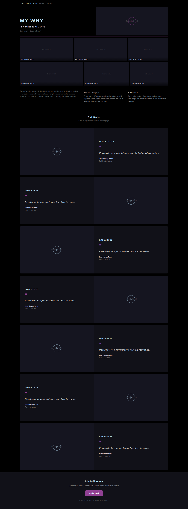
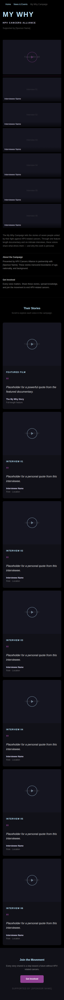
The same mosaic approach on a white background, with HPVCA's sky blue as the lead accent. Blue represents gender-inclusive HPV awareness per the brand guidelines — an intentional choice for this campaign.
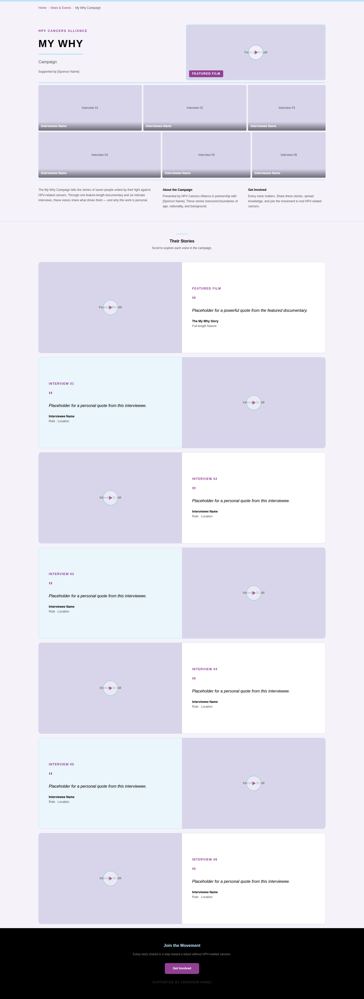
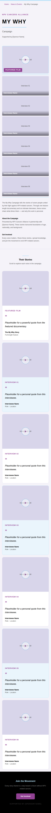
A reference view showing how each direction would appear within the existing HPVCA website.
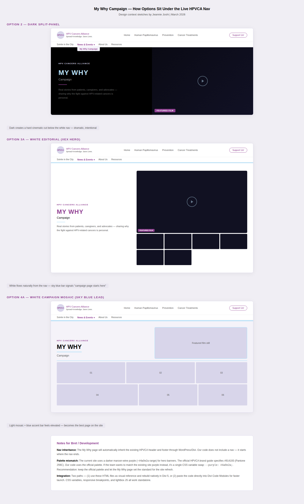